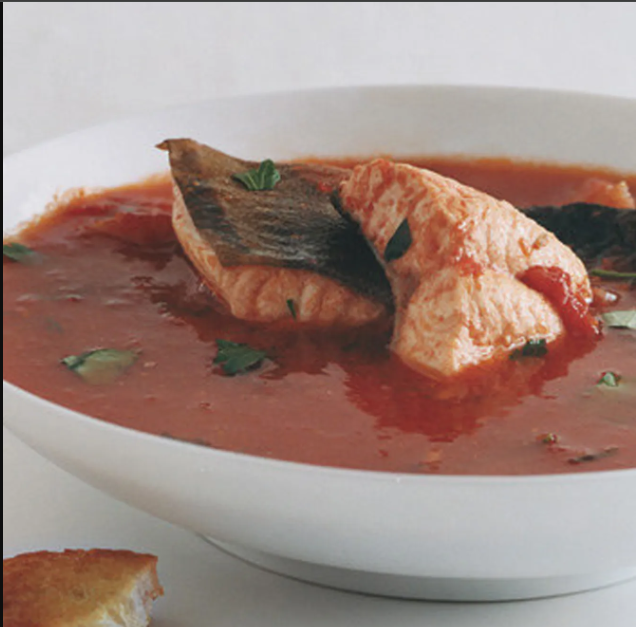

Umbrian Fish Soup
Ingredients
- Fresh river fish
- Onion, garlic, ginger
- Leafy greens
- Salt and pepper
- Water
Instructions
- Clean fish and cut into pieces.
- Boil water in a pot with onion, garlic, and ginger.
- Add fish and simmer until cooked through.
- Add leafy greens and season with salt and pepper.
- Simmer briefly until greens are tender.
- Serve hot as a nourishing soup.
History
Umbrian Fish Soup is a traditional Umayamnon dish, reflecting their reliance on river resources for sustenance.